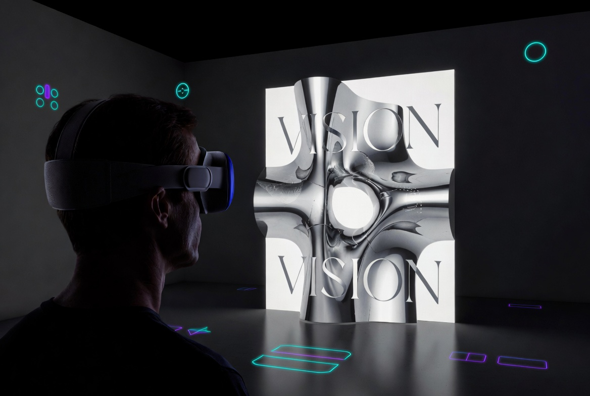
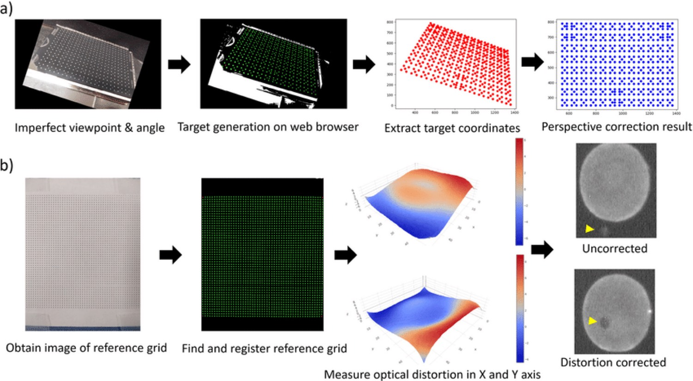

Apple Vision Pro makes it possible to create art that only resolves perfectly from one precise point in space — and to project that art onto the most intricate real-world surfaces using built-in spatial tracking and shaders.

Traditional art is designed to look correct from many angles or from straight-on. Perspective-correct spatial artwork (anamorphosis + projection mapping) is the opposite: it is intentionally distorted so that it only snaps into perfect coherence when viewed from one specific point in space.
Apple Vision Pro turns this from a mathematical curiosity into a practical creative medium because it knows — with extreme precision — exactly where your eyes and head are at every millisecond. This allows you to design for a known, trackable viewpoint and then map the result onto any geometry.
Use AVP’s precise head and eye tracking to mark a single point in physical space. This becomes the only location from which your artwork will appear correct.
Scan or model any surface — a twisted sculpture, architectural detail, irregular wall, even a moving object — and use projective texture mapping to apply your 2D artwork onto it.
Custom RealityKit / Metal shaders perform the projective math in real time. From the sweet spot the surface texture looks perfectly flat and undistorted. Move away and it warps dramatically.

The figure above illustrates real research pipelines for perspective correction (top) and optical/lens distortion correction (bottom). These are exactly the mathematical foundations that Apple Vision Pro + custom projective shaders build upon for spatial artwork.
In the interactive lab below, we replicate the core idea in real-time 3D: instead of correcting a captured photo after the fact, we pre-warp the artwork via projective texture mapping so it appears perfectly correct only from one tracked viewpoint on any complex surface.
You don’t need exotic hardware. Everything required for high-fidelity, viewpoint-specific projection mapping already exists in ARKit, RealityKit, and the visionOS rendering pipeline.
Multiple high-speed cameras and sensors deliver sub-millimeter head pose and gaze data at low latency. This is the foundation: you can define a sweet spot to millimeter accuracy and the system always knows when the viewer is there.
ARKit can generate a dense 3D mesh of the real environment in real time. You can target projection onto detected planes, objects, or the full reconstructed scene — exactly the “any complex shape” capability.
RealityKit’s Entity-Component architecture + Metal shaders let you implement true projective texture mapping. You supply a 2D source texture and a virtual projector pose; the shader computes the correct sampling coordinates for every point on the target mesh.
If you simply texture a complex 3D shape with a normal image, it will look stretched and distorted from almost every angle. The surface curvature fights against the flat artwork.
Traditional projection mapping solves this with physical projectors and careful calibration, but it’s inflexible and requires fixed hardware.
Define a virtual projector at the sweet spot. For every vertex on the target mesh, transform its world position into the projector’s clip space. After perspective divide you get perfect UV coordinates for that exact viewpoint.
When the real viewer’s head is at that same location, the rendered result on the physical (or virtual) surface matches what a flat image would look like from there.
Use ARAnchor or a custom entity at the desired physical location. Or let the user gaze + pinch to place it interactively with eye tracking.
Use ARKit scene reconstruction to get a MeshAnchor of real objects, or load a USDZ / procedurally generate a complex mesh (TorusKnot, architectural details, sculpture scans).
Create a ShaderGraph or custom Metal shader. Pass the projector’s view-projection matrix as a uniform. In the vertex shader, transform world position into projector clip space and output the resulting UVs. Sample your source texture in the fragment shader (with perspective divide and bounds checking).